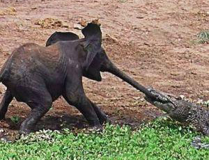

Nguyen Duc Duy
Képtelen természetrajz
Az elefánt (részlet)
Az elefánt a legnagyobb szárazföldi állat, de csak a felnőtt elefánt, mert egy igen kis elefánt például jóval kisebb, mint egy igen nagy víziló. Az elefánt úgynevezett állatkertekben fordul elő, a föld minden nagyobb városában, amiért is az elefánt hazája széles e világ, amiben a művészhez hasonlít. Állatkert nélkül csakis Indiában és Afrikában fordul elő, amiért is azok, akik elefántvadászatra indulnak Pilisvörösvárra, kénytelenek néhány nyúllal beérni.
Meddig él egy elefánt?

Az elefántot robbanó golyóval vadásszák, amire nagyon dühös. Életkora igen magas, egy tudós egyszer sokáig figyelt egy elefántot, amint az kétszáz évet élt egyfolytában. Persze előbb is meghalhat, de csak akkor, ha valami olyan különös baj történik vele, amit egy elefánt se bír ki.
Az elefánt és a fürdés

Az elefánt igen sajátságosan iszik, beledugja ormányát a vízbe, éppen úgy, mint a nagyorrú kávénénikék a kávéba, de aztán a kávénénikéktől eltérőleg teleszívja az ormányát, és azt nem hagyja csak úgy visszacsöpögni a kötényére, hanem igenis belespricceli a szájába, amiben bizony a disznóhoz hasonlít, nem mintha a disznó is így tenne, hanem mert ez már mégiscsak illetlenség.